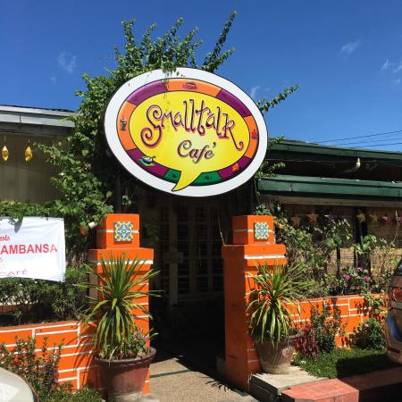
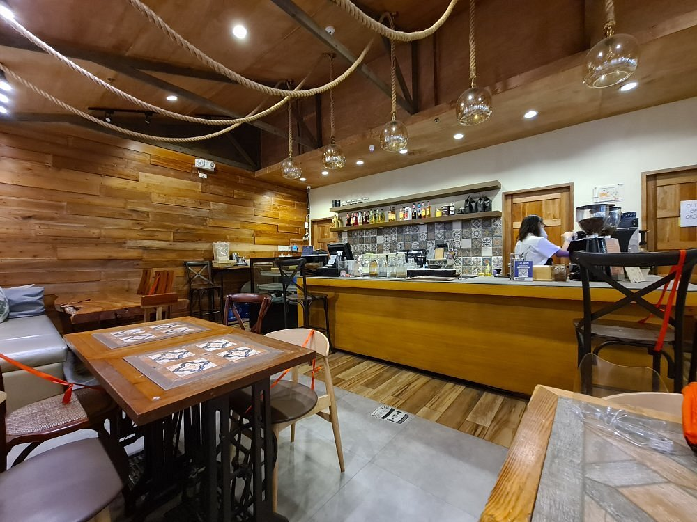
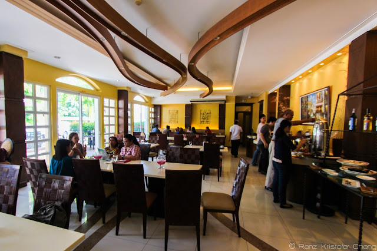
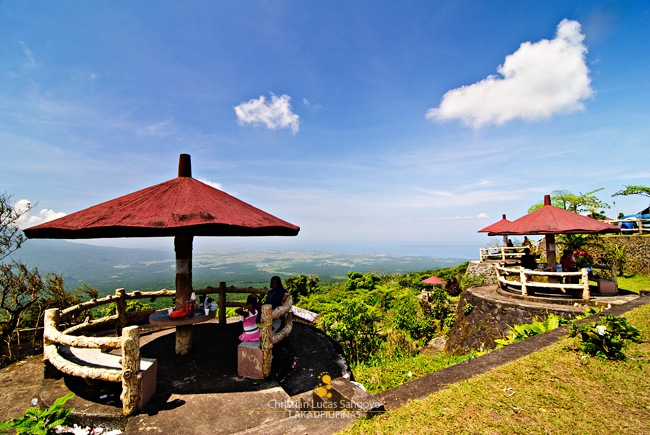
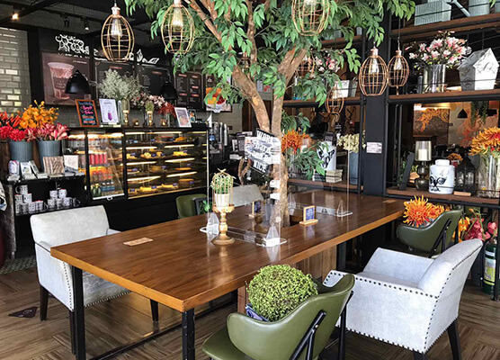
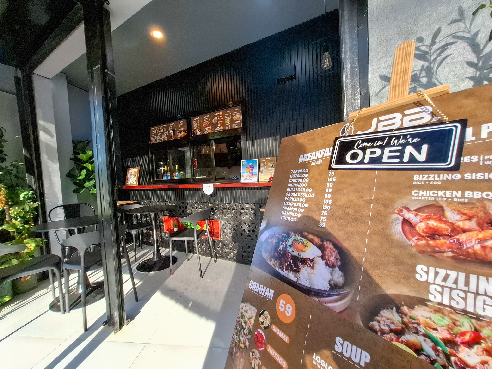

Discover cozy cafes, relaxing coffee spots, and stylish places in Albay where you can enjoy drinks, snacks, and a peaceful atmosphere.
Cafes in Albay are perfect for students, friends, families, and travelers who want to relax while enjoying coffee, desserts, and light meals. Many cafes also offer cozy interiors and scenic views that make the experience more enjoyable.

One of the most well-known cafes in Albay, Small Talk Café offers a cozy place where visitors can enjoy coffee, pasta, snacks, and relaxing meals.
Best For: Relaxed meals, coffee dates, and visitors who want a familiar cafe with a cozy atmosphere.
How to Find: Search "Small Talk Cafe Legazpi City Albay" on Google Maps or ask for directions in the city proper.

A stylish and modern café where guests can enjoy coffee, drinks, and light food in a comfortable and relaxing setting.
Best For: Stylish coffee breaks, quiet conversations, and visitors looking for a modern cafe setting.
How to Find: Search "528 Ilawod Cafe Legazpi City Albay" on Google Maps or ask staff in nearby commercial areas.

A simple and welcoming café for visitors who want a quiet place to enjoy coffee, desserts, and casual conversations.
Best For: Visitors who want a simple cafe for desserts, coffee, and casual meetups near the city.
How to Find: Search "Caffe San Marco Legazpi City Albay" on Google Maps or ask locals for nearby cafes in Legazpi.

A scenic café where guests can enjoy their drinks and meals while taking in relaxing views and the natural beauty of Albay.
Best For: Scenic coffee stops and visitors who want a relaxing place to enjoy the view while dining.
How to Find: Search "Mayon Skyline Cafe Albay" on Google Maps or ask locals for view cafes near upland attractions.

A great place for visitors who enjoy aesthetic interiors, picture-taking, and relaxing coffee moments with friends.
Best For: Visitors who like picture-worthy interiors, group hangouts, and sweet cafe drinks.
How to Find: Search "Coffee Project Legazpi City Albay" on Google Maps or ask for nearby mall and city-center cafes.

A budget-friendly café where visitors can enjoy simple coffee, snacks, and a calm atmosphere after exploring Albay.
Best For: Quick coffee stops, affordable snacks, and visitors exploring Tabaco City on a budget.
How to Find: Search "Local Coffee Corner Tabaco City Albay" on Google Maps or ask drivers for budget cafes in town.
Many of the most popular cafes in Albay are found in Legazpi City, near commercial areas, schools, business districts, and roads where both locals and visitors usually spend time. Some smaller coffee spots can also be found in Tabaco and nearby towns, especially in places where people gather to relax, study, or meet with friends. Before visiting, it is helpful to search the cafe name on Google Maps, check nearby landmarks, and see how far it is from your hotel or current location. If you want to discover lesser-known coffee spots, hotel staff, tricycle drivers, and local residents can often recommend cafes with good coffee, relaxing interiors, or scenic views.
Visit during the afternoon or early evening if you want a slower and more relaxing coffee break, especially in cafes that become busy during lunch and dinner hours. Bring enough cash in case the cafe does not accept digital payments, and ask first if Wi-Fi, charging outlets, or indoor seating are available if you plan to stay longer. If you are not sure what to order, try the cafe's signature drink, best-selling pastry, or house dessert so you can enjoy what regular customers usually recommend. It is also a good idea to ask whether the cafe has a view, quiet corner, or best time for fewer people if you want a more peaceful experience.